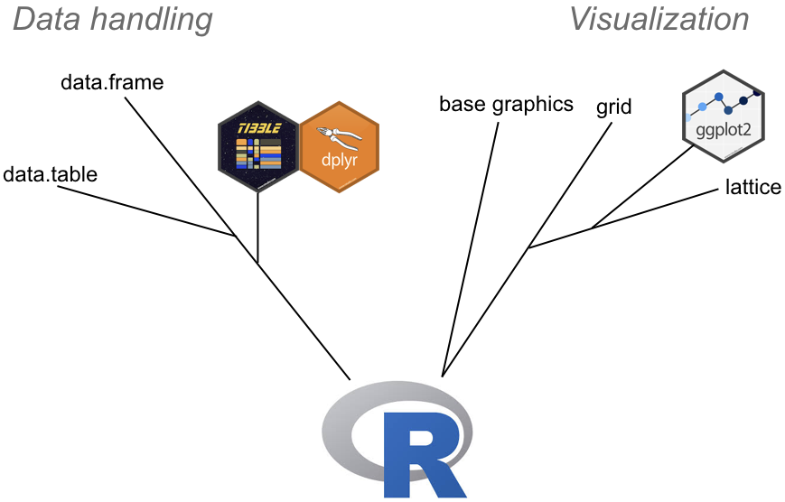
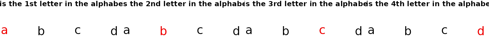
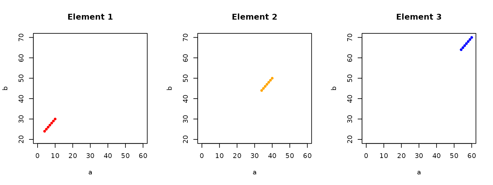

Unit 1 Module 3
GEOG246-346
2026-09-02 Back to home
Source:vignettes/unit1-module3.Rmd
unit1-module3.RmdIntroduction to R programming
Up until now we learned mostly about setting up and maintaining an
R project package. We have walked through a brief,
high-level overview of R’s structure. Now we get down to
the business of learning how to use it.
How R is evolving and how it affects us
Before starting, we need to turn back to natural history for another
metaphor, specifically evolution. R is a language that has
been undergoing fairly substantial changes recently. There seems to be
clear development trajectories within the language, much like the
evolution of species.

An (approximate) lineage of R packages/objects involved in data handling and graphics.
The graphic above is crude and almost certainly not correct in some
respects (e.g. relative age of divergence), but it serves to illustrate
what I think are key developments that are changing how we program in
R. Many of these changes are being driven by the “tidyverse”, which is:
…an opinionated collection of R packages designed for data science. All packages share an underlying design philosophy, grammar, and data structures.
Most prominent amongst these are the dplyr and
ggplot2 packages, which respectively provide methods for
manipulating data sets and producing graphics. These packages are
designed around a fairly different syntax than that of base
R, and are increasingly dominating the R
world. They are becoming so dominant in fact that a number of leading
lights in the R field argue that R beginners should first
be taught using tidyverse packages, and avoid base R and
much of the programmatic concepts that are needed to go with it. The
argument is summarized here.
The idea is appealing, but since this is a course on
Geospatial Analysis with R, I believe we should still learn
base R, because many spatial packages are designed with
base R in mind. Although tidyverse
compliance/compatibility among spatial packages is growing, in practice
many of the examples you will find for them use base R
syntax, particularly the flagship package for raster-based analyses, terra,
which is the much faster replacement for the workhorse
raster package.
At the same time, we also need to learn some tidyverse, at least
dplyr and ggplot, because the sf
package (the replacement for sp, which provides spatial
vector functionality in R) is designed to work with the
tidyverse.
So we are going to learn aspects of both. Before diving in, I want to
illustrate how different syntaxes can look within some of
R’s evolutionary branches. We’ll focus on data
manipulation.
library(tibble)
library(data.table)
# a data.frame with 1000 rows and randomly assigned groups and values...
set.seed(1)
d <- data.frame(a = sample(letters[1:7], size = 1000, replace = TRUE),
b = runif(n = 1000, min = 0, max = 20))
head(d)
#> a b
#> 1 b 10.6161759
#> 2 c 13.6972181
#> 3 e 7.6656679
#> 4 g 19.0997600
#> 5 b 2.3671316
#> 6 g 0.7820011
# ...converted to a tibble
d_tb <- as_tibble(d)
d_tb
#> # A tibble: 1,000 x 2
#> a b
#> <fct> <dbl>
#> 1 b 10.6
#> 2 c 13.7
#> 3 e 7.67
#> 4 g 19.1
#> 5 b 2.37
#> 6 g 0.782
#> 7 g 10.1
#> 8 e 11.6
#> 9 e 16.8
#> 10 a 13.1
#> # … with 990 more rows
# ...converted to a data.table
d_dt <- data.table(d)
d_dt
#> a b
#> 1: b 10.616176
#> 2: c 13.697218
#> 3: e 7.665668
#> 4: g 19.099760
#> 5: b 2.367132
#> ---
#> 996: f 15.500565
#> 997: e 1.381404
#> 998: b 4.818985
#> 999: b 4.856037
#> 1000: b 7.742260The example above creates a data.frame d and randomly
assigns some values to it, and then converts it to a tibble
(d_tb) and then a data.table
(d_dt). A tibble and data.table
are both enhanced data.frames with vastly improved
performance in terms of processing times and memory handling, as well as
a whole suite of functions designed to manipulate them that differ
markedly from original base syntax. The first thing to note is that the
generic print functions (note: you are implicitly calling
print when you simply type out the name of an object and
then execute the code) for each summarize the objects in fairly
different ways. In fact, we swapped (implicit) print for
head when it came to our data.frame, because
it would have printed all 1000 lines. Both the tibble and
data.table produce more compact outputs. Note that printing
a tibble shows information on the data type in each column,
and just the first 10 rows. Printing a data.table shows no
information on data type, and shows the first and last 5 rows, and
separates row numbers from data with “:”.
The real differences come with the syntax for manipulating these datasets. Let’s take a brief look at how we might operate on the three objects, by calculating the mean of variable “b” according to the categorical groups defined in “a”.
Here’s how we would do it most efficiently with the
data.frame:
aggregate(d$b, list(d$a), mean)
#> Group.1 x
#> 1 a 10.003739
#> 2 b 9.721181
#> 3 c 8.476785
#> 4 d 9.326792
#> 5 e 10.204949
#> 6 f 10.244814
#> 7 g 10.249821And with the tibble. For this we load up
dplyr, which provides the functions designed to work with
this.
library(dplyr)
#>
#> Attaching package: 'dplyr'
#> The following objects are masked from 'package:stats':
#>
#> filter, lag
#> The following objects are masked from 'package:base':
#>
#> intersect, setdiff, setequal, union
d_tb %>%
group_by(a) %>%
summarize(mean(b))
#> # A tibble: 7 × 2
#> a `mean(b)`
#> <chr> <dbl>
#> 1 a 10.0
#> 2 b 9.72
#> 3 c 8.48
#> 4 d 9.33
#> 5 e 10.2
#> 6 f 10.2
#> 7 g 10.2And finally the data.table:
d_dt[, mean(b), by = a][order(a)]
#> a V1
#> 1: a 10.204565
#> 2: b 9.349255
#> 3: c 9.838504
#> 4: d 10.043368
#> 5: e 9.998252
#> 6: f 10.203975
#> 7: g 9.061001Three fairly different syntaxes for doing the same thing. These are
in descending order of processing speed. Generally an operation
performed on a large data.frame will be much slower than
one performed on a tibble, which will be slower than a
data.table. Also note that the functions
aggregate (from the core R package
stats) and group_by and summarize
(from dplyr) can be applied to all three objects
interchangeably, since all three objects are just data.frames.
data.table is the exception, as much of the functionality
of data.table is provided within the [], so
you can’t apply the syntax we show for d_dt to
d_tb and d.
d[, mean(b), by = a][order(a)]
#> Error in `[.data.frame`:
#> ! unused argument (by = a)
d_tb[, mean(b), by = a][order(a)]
#> Error:
#> ! object 'b' not founddata.table is extremely powerful, and is the tool of
choice for working with extremely large tabular datasets (it seems to
have heavy uptake in quantitative finance, for example), and by some measures
beats out pandas in python However, the syntax
is much more arcane, and, more importantly, not really part of
R’s spatial packages, so we won’t learn it further (but it
is well worth learning).
dplyr, however, is quite important to know, as the
functionality it provides is being incorporated into sf and
stars (the package that might be replacing
raster–but see terra). It is
also really great for accessing databases such as postgres. So we will
learn base R along with some dplyr and a few
other tidyverse functions so that we can get ready for these
changes.
Setting up for practice
In this module, you will be asked to answer questions and practice coding along the way. To aid this process:
- Create a new folder called “notebooks” in your class Rstudio project, as a top level folder.
- Open a new Rmarkdown file. Save it into the notebooks folder,
calling it
geog246346_unit1module3_practice.Rmd. Adjust the title as needed, and delete the text and chunks below. Keep one chunk, but delete the code in it, as a starting point for code - Type answers to questions, take notes, etc, outside the code chunks.
Put practice code inside the
Rcode chunks. Remember, you can execute code line by line within chunks to test it out, execute a single chunk, or knit the code all at once (note: when you knit, the code is executed in a new different environment than the one you use when executing line by line)
Indexing
You are already acquainted with R objects, data types,
classes, functions, etc. Now let’s start to work with them. We’ll start
by figuring out how to create and index into different types of data
structures, which is useful if we want to extract or edit values within
them. Indexing is also referred to as subsetting, because when we
extract values we are selecting a subset of an object.
One-dimensional data structures
Vectors
Recall that a vector is a 1-dimensional object. An atomic vector can contain only one data type.
a <- 1:10
b <- a
names(b) <- letters[1:10]Here we define the vector a, which has values
1:10, and make a copy of a called
b. We then assign names to each of the values in the vector
b. The names are the first 10 letters of the alphabet,
which R provides in a built-in vector called
letters (there is also LETTERS–type that into
the console and execute it to check it out). Note the operation here: we
apply the names function (run ?names to see
what this function does) to b, and then assign to
it the vector of letter from letters using
<-, R’s assignment operator (you could also use
=, but we don’t because we follow the R style
guide here, and for
reasons detailed here it
is better to stick with <- for assignment).
Note that this code also gives out first instruction in indexing.
Note that we use [] with letters,
(). That’s because letters is a vector from
which we are extracting a subset of values, as opposed to an object to
which we are applying a function, in which case we would enclose the
object with ()–as we did with names(a).
So now that a is an object, we also extract values from
it, using the same [] notation and values that specify
particular index positions.
# #1
a[1]
#> [1] 1
#
# #2
a[4:5]
#> [1] 4 5
#
# #3
a[c(1, 5, 10)]
#> [1] 1 5 10
#
# #4
a[length(a)]
#> [1] 10
#
# #5
a[-1]
#> [1] 2 3 4 5 6 7 8 9 10
#
# #6
a[-c(1, 3)]
#> [1] 2 4 5 6 7 8 9 10In the code above, we extract from a:
- Line #1: The 1st element
- Line #2: The 4th and 5th elements. Since
- Line #3: The 1st, 5th, and 10th elements
- Line #4: The last element
- Line #5: The 2nd through 10th elements
- Line #6: The 2nd and fourth through 10th elements
We use integers within the [] to indicate the
position of the element(s) we want to pull out of
a. If we want more than 1 element, we can specify a range
of indices using : if the positions are
contiguous/adjacent, i.e. 4:5. If they are discontiguous,
then we have to concatenate the indices using c(),
separating the integers specifying the index positions by commas,
i.e. c(1, 5, 10). Lastly, we can grab the last element and
the last element only using the index the final index number (10), or,
as os often the cases in large vectors, where we might not know the
exact total number of elements (and thus the index number of the final
element), we can use the length function to find out how
long (how many elements are in) the vector is,
i.e. length(a), which returns the value 10 in this case
into the [].
In examples 5 and 6 we use negative indicing to drop element the first element and 1st and third elements, yielding the remaining elements in the vector.
You can also use the names of elements in the vector, if it has names
assigned, as is the case with b (which you can also index
into with integers)
b["a"]
#> a
#> 1
b[c("d", "e")]
#> d e
#> 4 5
b[c("a", "e", "j")]
#> a e j
#> 1 5 10
b["j"]
#> j
#> 10
b[-"a"]
#> Error in `-"a"`:
#> ! invalid argument to unary operator
b[-c("a", "c")]
#> Error in `-c("a", "c")`:
#> ! invalid argument to unary operatorThe above recreates exactly what we did with integer indices, but using the element names instead. However, we see that negative indexing is not possible with names.
We can also index using logical operators to select elements of vectors based on their values.
# #1
a[a > 5]
#> [1] 6 7 8 9 10
#
# #2
a[a >= 2 & a < 7]
#> [1] 2 3 4 5 6
#
# #3
a[a == 7 | a == 2]
#> [1] 2 7
#
# #4
a[a %in% c(1, 10)]
#> [1] 1 10
#
# #5
b[b %in% 2:3]
#> b c
#> 2 3In the above we use logical operators to select values from
a and b based on their values. Let’s translate
what the above are doing exactly.
- Line #1: Select from
aall values ofathat greater than 5 - Line #2: Select from
aall values ofathat are greater than or equal to 2 and less than 7 - Line #3: Select from
aall values ofathat 7 or equal 2 - Line #4: Select from
aall values ofathat occur within a vector containing 1 and 10 (this is the same as: select fromaall values ofathat equal 1 or equal 10) - Line #5: Select from
ball values ofbthat occur within a vector containing 2 and 3
Let’s look at two aspects of this syntax, starting within the logical
operations within the []. What are those doing?
a > 5
#> [1] FALSE FALSE FALSE FALSE FALSE TRUE TRUE TRUE TRUE TRUE
a >= 2 & a < 7
#> [1] FALSE TRUE TRUE TRUE TRUE TRUE FALSE FALSE FALSE FALSE
a == 7 | a == 2
#> [1] FALSE TRUE FALSE FALSE FALSE FALSE TRUE FALSE FALSE FALSE
a %in% c(1, 10)
#> [1] TRUE FALSE FALSE FALSE FALSE FALSE FALSE FALSE FALSE TRUE
b %in% 2:3
#> [1] FALSE TRUE TRUE FALSE FALSE FALSE FALSE FALSE FALSE FALSEThose operations are testing whether each value in the vector meets
the particular condition (TRUE) or not
(FALSE), e.g. is thise value of a greater than
5 or not? When those tests are done inside the [], the
resulting values that are TRUE are the ones selected from
the vector. The FALSEs are ignored.
We can recover the index positions from the logicals using the
which function:
You can check that by comparing the index values to the positions of
the TRUE values in the corresponding logical results (the
1st and 5th examples) above that.
Lists
A list is a vector that can contain multiple data types. It can be named or unnamed.
l <- list(1, 1:10, c("a", "b", "c", "d")) # unnamed list
l2 <- l
names(l2) <- letters[1:3] # named list
l
#> [[1]]
#> [1] 1
#>
#> [[2]]
#> [1] 1 2 3 4 5 6 7 8 9 10
#>
#> [[3]]
#> [1] "a" "b" "c" "d"
l2
#> $a
#> [1] 1
#>
#> $b
#> [1] 1 2 3 4 5 6 7 8 9 10
#>
#> $c
#> [1] "a" "b" "c" "d"l is an unnamed list, l2 has names assigned
to each element. The results above give some insights into how to index
into lists. Lists are indexed from within [[]] as well as
[]:
# Chunk 1
# #1
l[[1]]
#> [1] 1
#
# #2
l[1]
#> [[1]]
#> [1] 1
#
# #3
l[2:3]
#> [[1]]
#> [1] 1 2 3 4 5 6 7 8 9 10
#>
#> [[2]]
#> [1] "a" "b" "c" "d"
#
# #4
l[[2:3]]
#> [1] 3
#
# #5
l[[length(l)]]
#> [1] "a" "b" "c" "d"
#
# #6
l[length(l)]
#> [[1]]
#> [1] "a" "b" "c" "d"- Line #1: the example code pulls out the contents of the element of
list
l - Line #2: pulls the first element of list
linto a list of length 1 - Line #3: pulls the second and third elements of
linto a two-element list - Line #4: tries but fails to pull the second and
third elements of
lto see their contents–it only returns the contents of element 2 - Line #5: pulls out the contents of the last element of
l - Line #6: pulls the last element of list
linto a list of length 1
So list indexing by [[]] is different than by
[].
We can also index by name:
# Chunk 2
# #1
l2[["a"]]
#> [1] 1
#
# #2
l2["a"]
#> $a
#> [1] 1
#
# #3
l2[c("a", "b")]
#> $a
#> [1] 1
#>
#> $b
#> [1] 1 2 3 4 5 6 7 8 9 10
#
# #4
l2[[c("a", "b")]]
#> Error in `l2[[c("a", "b")]]`:
#> ! subscript out of bounds
#
# #5
l2[["c"]]
#> [1] "a" "b" "c" "d"
#
# #6
l2["c"]
#> $c
#> [1] "a" "b" "c" "d"
#
# #7
l2$c
#> [1] "a" "b" "c" "d"
#
# #8
l2$a
#> [1] 1Note that 1-6 just above (Chunk 2) recreate the previous 1-6 (Chunk
1) using integer indices, except Chunk 2 #4 shows the error resulting
from trying to pull the contents of two list elements out of the list
simultaneously. Chunk 2 #7 and #8 are new however, as they use the
$ operator to pull out the contents of the element by name.
l2$c is the same as l2[["c"]].
One more thing with list indexing we will look at: indexing specific elements within list elements:
# Chunk 3
names(l2$c) <- letters[1:4]
#
# #1
l[[2]][2:3]
#> [1] 2 3
#
# #2
l2$b[2:3]
#> [1] 2 3
#
# #3
l[2][[1]][2:3]
#> [1] 2 3
#
# #4
l2["b"][[1]][2:3]
#> [1] 2 3
#
# #5
l[[3]][c(1, 4)]
#> [1] "a" "d"
#
# #6
l2$c[c(1, 4)]
#> a d
#> "a" "d"
#
# #7
l2$c[c("a", "d")]
#> a d
#> "a" "d"
#
# #8
l2["c"][["c"]][c("a", "d")]
#> a d
#> "a" "d"
#
# #9
l[2:3][3] # doesn't work
#> [[1]]
#> NULLIn Chunk 3 above, we are indexing into a specific list element, and
then indexing into values within the selected vectors. First thing we do
is assign names (a, b, c, d) to vector c in l2
(the 3rd element).
- In #1-#4 you see various ways how you can select elements 2 and 3
from the second list element (either
lorl2) - Lines #5-#8 show how we get extract elements 1 and 4 from the list’s 3 element
- Pay close attention to #3, #4, and #8, which each have three sets of brackets
- Lastly we see #9, which produces a NULL because it is not possible to index into two separate list elements
Indexing to change values
We have just seen how you can select values from vectors and lists.
Now we look at using indices to change values within objects. Fairly
straightforward, and mostly entails doing the indexing on the left-hand
side of the <-:
# Chunk 4
set.seed(1)
a <- sample(0:100, size = 10, replace = TRUE)
names(a) <- letters[1:10]
b <- a # copy we will modify
l <- list(e = 1, f = 1:10, g = a)
l2 <- l # copy we will modify
l
#> $e
#> [1] 1
#>
#> $f
#> [1] 1 2 3 4 5 6 7 8 9 10
#>
#> $g
#> a b c d e f g h i j
#> 67 38 0 33 86 42 13 81 58 50In the first two lines of Chunk 4, we are using the
sample function to select a 10 integers at random from a
vector of integers (0-100). We preceed that call with
set.seed(1), which ensures that each time we run this code
we get the same numbers drawn (use ?set.seed to
learn more about random seeds, and ?sample to learn about
the arguments passed to the function). Random number generation
is an important aspect of learning how to code, particularly for setting
up self-contained, reproducible examples that you can
use to ask others for help.
# Chunk 5
# #1
b[1] <- -99
a
#> a b c d e f g h i j
#> 67 38 0 33 86 42 13 81 58 50
#
# #2
b["j"] <- "z"
a
#> a b c d e f g h i j
#> 67 38 0 33 86 42 13 81 58 50
b
#> a b c d e f g h i j
#> "-99" "38" "0" "33" "86" "42" "13" "81" "58" "z"
#
# #3
b[c("b", "f")] <- 9999
a
#> a b c d e f g h i j
#> 67 38 0 33 86 42 13 81 58 50
b
#> a b c d e f g h i j
#> "-99" "9999" "0" "33" "86" "9999" "13" "81" "58" "z"
#
# #4
b[3:4] <- c(-1, -2)
a
#> a b c d e f g h i j
#> 67 38 0 33 86 42 13 81 58 50
b
#> a b c d e f g h i j
#> "-99" "9999" "-1" "-2" "86" "9999" "13" "81" "58" "z"
#
# #5
b[5:length(b)] <- 10000:10001
a
#> a b c d e f g h i j
#> 67 38 0 33 86 42 13 81 58 50
b
#> a b c d e f g h i j
#> "-99" "9999" "-1" "-2" "10000" "10001" "10000" "10001" "10000" "10001"
#
# #6
b[length(b) - 1] <- 0:10
#> Warning in b[length(b) - 1] <- 0:10: number of items to replace is not a
#> multiple of replacement lengthLooking at the above, we are indexing the same way we did in the previous section, but in this case we are assigning new values to overwrite the existing ones in those index positions. Note that the number of replacements can be less than or equal to, but not exceed, the number of elements you index:
- Lines #1-#3 show how you replace 1 or more elements with a single value. Notice how in #2 that replacing the named element “j” with a character (“z”) coerced the entire vector to a character type
- Line #4 how you replace two elements with two different values (the first element indexed gets the first value, the second element gets the second value)
- Line #5 shows how you replace 6 elements’ values with two values–the effects in this latter case is that the replacement values are alternated (probably not something you would want to do in real life). Notice also that over-writing the “z” value at the tail of the vector (introduced in #2) do not result in the vector being coerced back to an integer type
- Finally, #6 shows what you cannot do, and tells you why
Now let’s replace list elements:
# Chunk 6
#
# #1
l2[[1]] <- c(1, 4)
l[[1]]
#> [1] 1
l2[[1]]
#> [1] 1 4
#
# #2
l2$f[c(1, 10)] <- c(-1, 1000)
l$f
#> [1] 1 2 3 4 5 6 7 8 9 10
l2$f
#> [1] -1 2 3 4 5 6 7 8 9 1000
#
# #3
l2[[3]][letters[1:4]] <- 1:4
l[[3]]
#> a b c d e f g h i j
#> 67 38 0 33 86 42 13 81 58 50
l2[[3]]
#> a b c d e f g h i j
#> 1 2 3 4 86 42 13 81 58 50
#
# #4
l2$myfun <- function(x) x * 10
l
#> $e
#> [1] 1
#>
#> $f
#> [1] 1 2 3 4 5 6 7 8 9 10
#>
#> $g
#> a b c d e f g h i j
#> 67 38 0 33 86 42 13 81 58 50
l2
#> $e
#> [1] 1 4
#>
#> $f
#> [1] -1 2 3 4 5 6 7 8 9 1000
#>
#> $g
#> a b c d e f g h i j
#> 1 2 3 4 86 42 13 81 58 50
#>
#> $myfun
#> function (x)
#> x * 10In Chunk 6 above, we compare changes to elements of the copy list
l2 to the relevant elements of the original list
l:
- Line #1 replaces
l2’s first element, a single element vector, with a two-element vector - Line #2 replaces the 1st and 10th element of the vector in the
l2element namedfwith -1 and 1000, respectively - Line #3 replaces elements named a, b, c, and d in the vector held in
l2’s third element. - Line #4 Assigns a fourth element to
l2namedmyfun, which is a function we defined on the right of the operator.
# Chunk 7
l2$myfun(l2$f)
#> [1] -10 20 30 40 50 60 70 80 90 10000We’ll leave you to figure out what is happening in Chunk 7 for the questions below.
Practice
Questions
- In 2.1.1, what class of object is
a? Recreateain your own script and apply a function to it to get the answer.
- In 2.1.2, Chunk 3 #3, #4, and #8, why do we have to use three sets of brackets to get access to the vector elements? Hint: pay attention to the first set of brackets.
- In 2.1.3, please describe (e.g. class, data structure, number of
elements)
aandlin Chunk #4. - In 2.1.3 Chunk #7, please describe the operation that we just performed, and what objects are used in it.
Code
- Create a vector
a, with values 20:30, a vectorbholding all letters in the alphabet. - Assign letters as the names for vector
a, such thata[1]gets the name “a”,a[2]gets named “b”, etc.
- Combine those vectors in to a list
l, assigning namesaandbto the two list elements - Select from
aas follows:
- All values
>=26 - The 1st and 7th element
- The last element and the second to last element (extra marks if you
use
lengthto find both index numbers)
- Select from
bthe values named “a”, “c”, and “g” - Select from
l:
- The first element by integer index
- The first element by integer index, so that it returns as a 1-element list
- All values in the element named
athat are<than 25 - All values in the element named
athat are equal to 25 - All values in the second element that are contained in the vector of
letters
c("d", "e", "f")
Two-dimensional structures
The two-dimensional structures of greatest interest to us are the
matrix and data.frame. Indexing into these
works in a similar fashion as with 1-d structures, in that you can index
with integers, by name, and logically. However, in this case your setup
is [r, c], where indexing is done row (r) and column
(c).
matrix
Let’s start with a 5 row, 3-column integer matrix:
# Chunk 8
m <- cbind(1:5, 11:15, 21:25)
m
#> [,1] [,2] [,3]
#> [1,] 1 11 21
#> [2,] 2 12 22
#> [3,] 3 13 23
#> [4,] 4 14 24
#> [5,] 5 15 25
#
# #1
m[1, 1]
#> [1] 1
#
# #2
m[2, 2]
#> [1] 12
#
# #3
m[1:2, 2:3]
#> [,1] [,2]
#> [1,] 11 21
#> [2,] 12 22
#
# #4
m[c(1, 4), c(1, 3)]
#> [,1] [,2]
#> [1,] 1 21
#> [2,] 4 24
#
# #5
m[-1, -3]
#> [,1] [,2]
#> [1,] 2 12
#> [2,] 3 13
#> [3,] 4 14
#> [4,] 5 15
#
# #6
m[-c(1:4), -c(1:2)]
#> [1] 25In #1, row 1, column 1 is selected, #2 is row 2, column 2, #3 is rows 1 and 2, columns 2 and 3, #4 is rows 1 and 4 and columns 2 and 3, while #5 and #6 are dropping different combinations of rows and columns, returning the remaining rows and columns.
Now let’s do it with names:
# Chunk 9
colnames(m) <- letters[1:3]
rownames(m) <- letters[1:5]
m
#> a b c
#> a 1 11 21
#> b 2 12 22
#> c 3 13 23
#> d 4 14 24
#> e 5 15 25
#
# #1
m["a", "a"]
#> [1] 1
#
# #2
m[c("a", "d"), c("a", "b")]
#> a b
#> a 1 11
#> d 4 14
#
# #3
m[letters[c(1, 5)], letters[1:2]]
#> a b
#> a 1 11
#> e 5 15
#
# #4
m["a", -c("5")]
#> Error in `-c("5")`:
#> ! invalid argument to unary operator
#
# #5
m["a", -(colnames(m) == "a")]
#> b c
#> 11 21
#
# #6
m[-which(rownames(m) %in% c("a", "b", "c")), "a"]
#> d e
#> 4 5In Chunk 9 we assign names to the 5 rows and 3 columns of
m, and use those names to extract different parts of the
matrix. This should be fairly how this works by now, although in #3 you
will notice how we use indexing into the letters vector to
extract the actual row and column names, so that we don’t see them. #4
shows that you can’t use negative indexing on a column name (and also
not on a row name). #5 and #6 shows how you could do negative indexing
though:
- Use
colnames(m)to return the vector ofm’s column names - Use the
==operator to find which column names matcha - Wrap in
()and apply-to the result, which drops the column names meeting theTRUEcondition
The same is done on row names in #6.
A matrix value can also be accessed with a single vector:
# Chunk 10
# #1
m[1:5]
#> [1] 1 2 3 4 5
#
# #2
m[6:10]
#> [1] 11 12 13 14 15
#
# #3
m[11:15]
#> [1] 21 22 23 24 25
#
# #4
m[1:15]
#> [1] 1 2 3 4 5 11 12 13 14 15 21 22 23 24 25
#
# #5
m[length(m)]
#> [1] 25Looking at the examples above, you can see that the order of indexing is by row then column.
How about by logical indexing? We already sort of got a start with that in Chunk 1 (#5 and #6), but let’s have a look:
# Chunk 11
# #1
m[m[, 1] == 3, 1:3]
#> a b c
#> 3 13 23
#
# #2
m[m[, 2] > 11, 3]
#> b c d e
#> 22 23 24 25
#
# #3
m[(m[, 1] > 3) & (m[, 2] < 15), 3]
#> [1] 24
#
# #4
m[(m[, "a"] > 3) & (m[, "b"] < 15), 2:3]
#> b c
#> 14 24
#
# #5
m[!m[, "a"] %in% 3:5, 1:3]
#> a b c
#> a 1 11 21
#> b 2 12 22In Chunk 11 #1 we search in m’s first column for the row
that holds the value 3, and then use that to select the values on that
row in columns 1-3, which is the equivalent of m[3, ]
(because the values in m[, 1] correspond to the row
numbers). #2 looks for all values >11 in column 2, but selects the
values from column 3. #3 searches for values >3 in column 1 and
values <15 in column 2, pulling out values from column 3. #4 does the
same search using column names rather than column index integers, but
pulls out values from columns 2 and 3. Finally, #5 introduces the
operator !, which, when combined with %in% is
used to identify the rows in column a (1) that do not match the values
3, 4, or 5, and then subset the values in columns 1-3 (a, b, and c).
data.frame
We now know that a data.frame is a matrix that contains
more than one data type. It is also a column-bound list. When it comes
to indexing, data.frame is very similar to
matrix, but also has some differences.
set.seed(1)
d <- data.frame(a = letters[1:4], b = 1:4, c = runif(n = 4, min = 0, max = 20))
d
#> a b c
#> 1 a 1 5.310173
#> 2 b 2 7.442478
#> 3 c 3 11.457067
#> 4 d 4 18.164156
str(d)
#> 'data.frame': 4 obs. of 3 variables:
#> $ a: chr "a" "b" "c" "d"
#> $ b: int 1 2 3 4
#> $ c: num 5.31 7.44 11.46 18.16A word on factors
One thing to point out about data.frame is that it used
to, prior to R4.0, default to treating a character variable as a
factor. Here is a definition:
Conceptually, factors are variables in R which take on a limited number of different values; such variables are often refered to as categorical variables. One of the most important uses of factors is in statistical modeling; since categorical variables enter into statistical models differently than continuous variables, storing data as factors insures that the modeling functions will treat such data correctly.
Factors in R are stored as a vector of integer values with a corresponding set of character values to use when the factor is displayed. The factor function is used to create a factor. The only required argument to factor is a vector of values which will be returned as a vector of factor values. Both numeric and character variables can be made into factors, but a factor’s levels will always be character values. You can see the possible levels for a factor through the levels command.
Although I usually don’t use them, and prefer to have non-numeric represented as characters, factors are still widely used, and you may still sometimes encounter. And if you are loading a dataset made with an older R version, chances are the data.frame might have a factor variable in there. If you encounter a factor and don’t want it, you can always change it to a character:
set.seed(1)
d2 <- data.frame(a = letters[1:4], b = 1:4,
c = runif(n = 4, min = 0, max = 20),
stringsAsFactors = TRUE)
str(d2)
#> 'data.frame': 4 obs. of 3 variables:
#> $ a: Factor w/ 4 levels "a","b","c","d": 1 2 3 4
#> $ b: int 1 2 3 4
#> $ c: num 5.31 7.44 11.46 18.16
d2$a <- as.character(d2$a)
str(d2)
#> 'data.frame': 4 obs. of 3 variables:
#> $ a: chr "a" "b" "c" "d"
#> $ b: int 1 2 3 4
#> $ c: num 5.31 7.44 11.46 18.16And you can change a character to a factor:
set.seed(1)
d2 <- data.frame(a = letters[1:4], b = 1:4,
c = runif(n = 4, min = 0, max = 20))
str(d2)
#> 'data.frame': 4 obs. of 3 variables:
#> $ a: chr "a" "b" "c" "d"
#> $ b: int 1 2 3 4
#> $ c: num 5.31 7.44 11.46 18.16
d2$a <- as.factor(d2$a)
str(d2)
#> 'data.frame': 4 obs. of 3 variables:
#> $ a: Factor w/ 4 levels "a","b","c","d": 1 2 3 4
#> $ b: int 1 2 3 4
#> $ c: num 5.31 7.44 11.46 18.16Indexing differences compared to matrix
Because data.frames are lists:
is.list(d)
#> [1] TRUEThey are indexed differently. The first major difference is that
$ and [[ can be used on a
data.frame:
# Chunk 12
# #1
d$a
#> [1] "a" "b" "c" "d"
#
# #2
d[["a"]]
#> [1] "a" "b" "c" "d"
#
# #3
d[[1]]
#> [1] "a" "b" "c" "d"
#
# #4
m$a
#> Error in `m$a`:
#> ! $ operator is invalid for atomic vectors
#
# #5
m[["a"]]
#> Error in `m[["a"]]`:
#> ! subscript out of bounds
#
# #6
m[[1]]
#> [1] 1
#
# #7
m[[1:3]]
#> Error in `m[[1:3]]`:
#> ! attempt to select more than one element in vectorIndexSee how both $ and [[ allow an entire
column to be extract from d (#1, #2, #3). In comparison,
$ doesn’t work with matrix m (#4), nor does
[[ (#5-#7), except it can be used with an integer index to
extract a single element (#6), but not multiple elements (#7).
The second major difference is that single vector indexing is applied
to columns only in data.frames, not by row, column.
# Chunk 13
# #1
d[1]
#> a
#> 1 a
#> 2 b
#> 3 c
#> 4 d
#
# #2
d[c("a", "c")]
#> a c
#> 1 a 5.310173
#> 2 b 7.442478
#> 3 c 11.457067
#> 4 d 18.164156
#
# #3
d[1:3]
#> a b c
#> 1 a 1 5.310173
#> 2 b 2 7.442478
#> 3 c 3 11.457067
#> 4 d 4 18.164156
#
# #4
d[1:4]
#> Error in `[.data.frame`:
#> ! undefined columns selectedThis is consistent with what saw earlier with 1-d lists, in that
[ can be used with one- to multi-element vectors to extract
multiple list elements (#1, #2, “3”); for data.frames, the
list elements are the columns. So if you specify in your indexing vector
a value that exceeds the number of columns in the
data.frame, you get an error (#4), because you are asking
for something that doesn’t exist.
Now let’s look subsetting data.frames with logical
indexing, which is also typically done differently then with a
matrix:
# Chunk 14
# #1
d[d$a %in% c("a", "c"), "c"]
#> [1] 5.310173 11.457067
#
# #2
d[d$a %in% c("a", "c"), c("a", "c")]
#> a c
#> 1 a 5.310173
#> 3 c 11.457067
#
# #3
d[d$b > 2 & d$c < 18, 1:3]
#> a b c
#> 3 c 3 11.45707
#
# #4
d[d["b"] > 2 & d["c"] < 18, 1:3]
#> a b c
#> 3 c 3 11.45707
#
# #5
d[d[, "b"] > 2 & d[, "c"] < 18, 1:3]
#> a b c
#> 3 c 3 11.45707Notice how the $ is used to specify the column name(s)
used in logical indexing (#1, #2, #3), which is the more convenient and
(I think) common way of logical indexing with data.frames.
You can also use the [x] (#4) or [, x] (#5,
same as with matrix) syntax.
Changing values
We’ll keep this short and sweet, because the concepts are pretty
close to what we use for 1-D structures. Here it is for
matrix:
# Chunk 15
# #1
m[1:4, 1:2] <- -9
m
#> a b c
#> a -9 -9 21
#> b -9 -9 22
#> c -9 -9 23
#> d -9 -9 24
#> e 5 15 25
#
# #2
m[c("d", "e"), "c"] <- 0
m
#> a b c
#> a -9 -9 21
#> b -9 -9 22
#> c -9 -9 23
#> d -9 -9 0
#> e 5 15 0
#
# #3
m[m[, "c"] == 0, 3] <- 24:25
m
#> a b c
#> a -9 -9 21
#> b -9 -9 22
#> c -9 -9 23
#> d -9 -9 24
#> e 5 15 25
#
# #4
m[m == -9] <- c(1:4, 11:14)
m
#> a b c
#> a 1 11 21
#> b 2 12 22
#> c 3 13 23
#> d 4 14 24
#> e 5 15 25
#
# #5
m[m < 5] <- "a"
m
#> a b c
#> a "a" "11" "21"
#> b "a" "12" "22"
#> c "a" "13" "23"
#> d "a" "14" "24"
#> e "5" "15" "25"Changes to values in different rows/columns are made with fairly
straightforward indexing in #1 and #2. In #3, we reset the change made
in #2 by searching in column “c” for the rows containing 0s, and then we
specify the column number to make sure that just the 0 values in rows 4
and 5 in column 3 (“c”) are replaced with 24 and 25 their original
values. A more efficient way of doing that might have been the approach
used in #4, where we don’t index a column value, and leverage the fact
that a matrix is simply a vector with two dimensions,
searching for all -9 values within in m, and then replacing
with their original values. We provide the replacement values in the
order in which a matrix is indexed (by row then column).
Finally, note how replacement with a character (#5) changes the entire
matrix to character.
Here is replacement with a data.frame:
# Chunk 16
# #1
d[d$b <= 2, "a"] <- "zzz"
d
#> a b c
#> 1 zzz 1 5.310173
#> 2 zzz 2 7.442478
#> 3 c 3 11.457067
#> 4 d 4 18.164156
#
# #2
d[d["a"] == "zzz", "a"] <- letters[1:2]
#
# #3
ds <- d[d$b >= 2 & d$c < 18, 2:3]
d[d$b >= 2 & d$c < 18, 2:3] <- 11:14
d
#> a b c
#> 1 a 1 5.310173
#> 2 b 11 13.000000
#> 3 c 12 14.000000
#> 4 d 4 18.164156
#
# #4
d[d$b >= 11 & d$c <= 14, 2:3] <- ds
d
#> a b c
#> 1 a 1 5.310173
#> 2 b 2 7.442478
#> 3 c 3 11.457067
#> 4 d 4 18.164156
#
# #5
d[[3]] <- 10^d$b
d
#> a b c
#> 1 a 1 10
#> 2 b 2 100
#> 3 c 3 1000
#> 4 d 4 10000In Chunk 16 above, #1 and #2 should make sense. In #3, we start to
get a bit more tricksy. We first create a new data.frame,
ds, which is a logically selected subset of columns
b and c. We then overwrite the same subset in
d with the vector 11:14. In #4, we use
ds to reset d. Finally, in #5, we show how the
3rd column of d can be replaced using [[
notation for indexing, and we use the 10 to the power of
(^) of d$b to create the replacement
values.
Subsetting and replacement with dplyr
Now that we have seen how to index/subset data.frames,
we’ll look at how that is done with dplyr. It is quite
different. First, read about the dplyr grammar, which provides a set of
“verbs” that are designed to replace many of the base R
approaches for manipulating data.frames, including how you
index them (you may also wish to read the chapter on data transformation in
R For Data Science).
Here we will focus on just indexing and replacement, using a slighly
larger version of d, noting the dplyr works on
data.frames as well as tibble:
# Chunk 17
set.seed(1)
d <- data.frame(a = letters[1:7], b = 1:7, c = runif(n = 7, min = 0, max = 20))
d
#> a b c
#> 1 a 1 5.310173
#> 2 b 2 7.442478
#> 3 c 3 11.457067
#> 4 d 4 18.164156
#> 5 e 5 4.033639
#> 6 f 6 17.967794
#> 7 g 7 18.893505
#
# #1
d %>% filter(a %in% c("a", "e")) %>% select(a, b)
#> a b
#> 1 a 1
#> 2 e 5
#
# #2
d %>% filter(c > 7 & c < 18) %>% select(-b)
#> a c
#> 1 b 7.442478
#> 2 c 11.457067
#> 3 f 17.967794
#
# #3
d %>% filter(a == "c")
#> a b c
#> 1 c 3 11.45707
#
# 4
d %>% slice(c(1:2, 7))
#> a b c
#> 1 a 1 5.310173
#> 2 b 2 7.442478
#> 3 g 7 18.893505A bunch of new stuff up there, which is first noticeable in #1:
- First, there’s the
%>%, which is the “pipe” operator, whichdplyrimports frommagrittr(a tidyverse package). It passes (or pipes) whatever is on the lefthand side to the operation defined on the right-hand side, which allows one to chain together multiple operations in a single command sequence - We pipe
dtodplyr’sfilterfunction, which is used to find rows based on their values. We use the same sort of logical indexing syntax as in our previous subsetting examples, in this case looking for values “a” and “e” in columna. However, one difference is that we don’t have to wrapain quotes. This is a feature ofdplyrfunctions, which makes coding more efficient - Having found the matching rows, we then narrow our selection to just
columns
aandbby using theselectfunction to pull the columns we want. Note that we don’t have to wrapaandbin quotes, or within ac()
In #2 we see how we find values in c that fall between 7
and 18, and then select columns a and c by
negative reference on b. Note that
dplyr::select allows the negative reference to be applied
right to the column name, which you can’t do in a matrix or
data.frame
In #3 using filter without select simply
returns the matching row across all columns. #4 introduces the
slice function, which lets us select by row number.
How about replacement?
# Chunk 18
# #1
d %>% mutate(a = ifelse(a %in% c("a", "e"), "zzz", a))
#> a b c
#> 1 zzz 1 5.310173
#> 2 b 2 7.442478
#> 3 c 3 11.457067
#> 4 d 4 18.164156
#> 5 zzz 5 4.033639
#> 6 f 6 17.967794
#> 7 g 7 18.893505
#
# #2
d %>% mutate(a = ifelse(a %in% c("a", "e"), "zzz", a),
c = ifelse(c > 7 & c < 18, -9999, c))
#> a b c
#> 1 zzz 1 5.310173
#> 2 b 2 -9999.000000
#> 3 c 3 -9999.000000
#> 4 d 4 18.164156
#> 5 zzz 5 4.033639
#> 6 f 6 -9999.000000
#> 7 g 7 18.893505
#
# #3
d %>% mutate(a = ifelse(a %in% c("a", "e"), "zzz", a)) %>%
mutate(c = ifelse(c > 7 & c < 18, -9999, c)) %>%
mutate(b = b + 10) %>%
mutate(d = b^2)
#> a b c d
#> 1 zzz 11 5.310173 121
#> 2 b 12 -9999.000000 144
#> 3 c 13 -9999.000000 169
#> 4 d 14 18.164156 196
#> 5 zzz 15 4.033639 225
#> 6 f 16 -9999.000000 256
#> 7 g 17 18.893505 289dplyr::mutate is used to change values in a
data.frame. In cases where you just want to change a subset
of values, and leave the rest of the data.frame as is, you
combine mutate with ifelse.
In #1, we use mutate to change the values “a” and “e” in
a to “zzz”. Let’s translate into plain language what
ifelse is doing: if any of a’s values are
the same as those in this vector containing “a” and “e”, then change
them to “zzz”, else just keep the values as they are.
In #2 we change values in both a and c,
using two ifelse statements in a single call to
mutate.
In #3 we chain together four separate calls to update specific rows
in a, b, and c, and to add a
fourth column d (the square of b).
So that’s a brief look at subsetting and replacement with
dplyr. We’ll build on that moving forward.
Practice
Questions
- What happens if you update an integer vector with a character?
- What happens if you have an integer
matrixmwith 10 rows and columns “a” and “b”, and you replace the fourth row of “b” with “zzz”? What would happen ifmis adata.frame? 3 Name two ways that indexing adata.framediffers from amatrix.
Code
- Create a matrix
mwith 10 rows and 3 columns. Make the 1st column have values 1:10, the second column 11:20, and the third 21:30 - Select rows 4 and 5 and columns 2 and 3 from the matrix
- Name the matrix columns “a”, “b”, and “c”
- Select the values from column “b” that are greater than 14 and less than or equal to 18
- Convert
mto adata.framed - Select from
d$athe values >4 and replace them with the value -1 - Replace the values in column
cwith the first 10 letter of the alphabet - Combine
manddinto a listl. Select rows 2 and 3 from columnbfrom the element containgdof listl - Use
dplyr::filterto select the values between 14 and 18 from columnbofd.
Calculating
One of the most basic, but useful, ways we can use R
data objects is to provide inputs for simple calculations, i.e. to use
R
as a calculator.
This is reasonably simple. There are of course a ton of base operators and functions that allow this:
a <- 1:10
log(a) # natural log
#> [1] 0.0000000 0.6931472 1.0986123 1.3862944 1.6094379 1.7917595 1.9459101
#> [8] 2.0794415 2.1972246 2.3025851
exp(log(a)) # inverse of natural log
#> [1] 1 2 3 4 5 6 7 8 9 10
10^a # exponents
#> [1] 1e+01 1e+02 1e+03 1e+04 1e+05 1e+06 1e+07 1e+08 1e+09 1e+10
log10(10^a) # log base 10
#> [1] 1 2 3 4 5 6 7 8 9 10
(a * 100) %% 3 # modulo (https://en.wikipedia.org/wiki/Modulo_operation)
#> [1] 1 2 0 1 2 0 1 2 0 1
sqrt(a) # square root
#> [1] 1.000000 1.414214 1.732051 2.000000 2.236068 2.449490 2.645751 2.828427
#> [9] 3.000000 3.162278
pi * a^2 # areas with built in pi constant
#> [1] 3.141593 12.566371 28.274334 50.265482 78.539816 113.097336
#> [7] 153.938040 201.061930 254.469005 314.159265Let’s look at it though for calculations on different kinds of objects:
# Chunk 19
b <- 1:5
m <- cbind(v1 = 1:5, v2 = 11:15)
#
m
#> v1 v2
#> [1,] 1 11
#> [2,] 2 12
#> [3,] 3 13
#> [4,] 4 14
#> [5,] 5 15
m2 <- cbind(c(10, 20), c(5, 10))
#
m2
#> [,1] [,2]
#> [1,] 10 5
#> [2,] 20 10
d <- data.frame(m, v3 = 101:105, v4 = letters[1:nrow(m)],
stringsAsFactors = FALSE)
d
#> v1 v2 v3 v4
#> 1 1 11 101 a
#> 2 2 12 102 b
#> 3 3 13 103 c
#> 4 4 14 104 d
#> 5 5 15 105 e
#
# #1
b * m
#> v1 v2
#> [1,] 1 11
#> [2,] 4 24
#> [3,] 9 39
#> [4,] 16 56
#> [5,] 25 75
#
# #2
b[length(b)] * m
#> v1 v2
#> [1,] 5 55
#> [2,] 10 60
#> [3,] 15 65
#> [4,] 20 70
#> [5,] 25 75
#
# #3
b[c(1, 5)] * m
#> v1 v2
#> [1,] 1 55
#> [2,] 10 12
#> [3,] 3 65
#> [4,] 20 14
#> [5,] 5 75
#
# #4
m * m
#> v1 v2
#> [1,] 1 121
#> [2,] 4 144
#> [3,] 9 169
#> [4,] 16 196
#> [5,] 25 225
#
# #5
m * m2
#> Error in `m * m2`:
#> ! non-conformable arrays
#
# #6
m * m2[, 1]
#> v1 v2
#> [1,] 10 220
#> [2,] 40 120
#> [3,] 30 260
#> [4,] 80 140
#> [5,] 50 300
#
# #7
#
d * m
#> Error in `FUN()`:
#> ! non-numeric argument to binary operator
#
# #8
d[, 1:3] * m
#> v1 v2 v3
#> 1 1 121 101
#> 2 4 144 204
#> 3 9 169 309
#> 4 16 196 416
#> 5 25 225 525
#
# #9
d[1, 1:3] * m[nrow(m), 1]
#> v1 v2 v3
#> 1 5 55 505
#
#10
d$v1 * m
#> v1 v2
#> [1,] 1 11
#> [2,] 4 24
#> [3,] 9 39
#> [4,] 16 56
#> [5,] 25 75
#
# 11
d$v1 * m2
#> Warning in d$v1 * m2: longer object length is not a multiple of shorter object
#> length
#> Error:
#> ! dims [product 4] do not match the length of object [5]In Chunk 19 above we define a vector b (5 elements),
matrices m (5 rows, 2 columns) and m2 (2 rows,
2 columns), and d, a data.frame (5 rows, 3
integer variables, 1 character variable).
In #1 we multiply m and b. Notice that each
element of b is multiplied with the corresponding row
number of each column in m, i.e. b[1] is
multiplied with m[1, 1], b[2] with
m[2, 1], all the way to b[5] with
m[5, 1]. This matching is repeated for column 2:
b[1] * m[1, 2]; b[2] * m[2, 2]; …;
b[5] * m[5, 2]. In #2 we pull out the last element of
b and multiply m by that one number. In #3, we
multiply the 1st and 5th element of b with m.
Notice the order of calculations.
In #4 we multiply m by itself. Multiplying a
m2 by m fails because the row numbers in both
do not match. We can, however, multiply m by one column of
m2 (#6), which is dimensionally equivalent to the example
in #3.
Multiplying a data.frame that mixes numeric and
character data with a numeric matrix (#7) fails, because characters are
not calculable. If we drop the character column, however, we see that it
works (#8). Note the order of operations here: d[, 1] is
multiplied with m[, 1], and d[, 2] with
m[, 2], but d[, 3] is multiplied with with
m[, 1]. The number of columns are mismatched, so
m’s columns are recycled. This means that dimensional
mismatches in terms of column numbers do not prevent calculations
between 2-d structures, but row mismatches do.
In #9 we see we how we can subset values from d and
m and multiply them. #10 shows how we extract a variable
from d into a vector and multiply that by m.
#11 shows what happens when a mismatch between the number of vector
elements and rows occurs.
We can also apply base operators/functions to 2-d structures:
log(m)
#> v1 v2
#> [1,] 0.0000000 2.397895
#> [2,] 0.6931472 2.484907
#> [3,] 1.0986123 2.564949
#> [4,] 1.3862944 2.639057
#> [5,] 1.6094379 2.708050
d[, 1:3]^2
#> v1 v2 v3
#> 1 1 121 10201
#> 2 4 144 10404
#> 3 9 169 10609
#> 4 16 196 10816
#> 5 25 225 11025
sqrt(m2)
#> [,1] [,2]
#> [1,] 3.162278 2.236068
#> [2,] 4.472136 3.162278There are also four useful function to know that provide row and column summaries of 2-d structures:
# Chunk 20
rowSums(m) # sum of each row
#> [1] 12 14 16 18 20
colSums(m) # sum of each column
#> v1 v2
#> 15 65
rowMeans(m) # mean of each row
#> [1] 6 7 8 9 10
colMeans(m) # mean of each column
#> v1 v2
#> 3 13The names should be self-explanatory, but the commments next to each line explain what is happening.
That’s just a brief introduction to calculations with R.
We have shown only a small number of possible calculations that you can
apply to a handful of example 1- and 2-d data structures. We will leave
it to you to explore others (see questions below).
One thing that is important to point out, which is described well in
rspatial.org’s introduction to
R, is that we are able to do this calculations without
writing control structures because R vectorizes these
operations. In most other languages you would have to write loops to
make sure the calculations were applied across elements in the
structure. For example, in python, the base language
requires this, and if you want to be able to do matrix algebra as we
have done here with base R, you need to use the
numpy package.
This vectorization therefore is advantageous in terms of reducing the
amount of code that has to be written. Vectorized operations are also
faster, so when you are writing more complex, it is always helpful to
try rely on R built in vectorization as much as
possible.
Control structures
Although we just heard about vectorized operations, and how they make it unnecessary for us to write control structures such as loops, we’ll end up having to use them eventually. Certains operations just require control structures, or if they aren’t essential, they make our code much efficient.
One nice example: imagine you have 5 different spreadsheets containing data that you need to analyze. It is more efficient to write one block of code that reads all 5 datasets into a single list object, then to write 5 lines of code that reads each object into it own object (resulting in 5 objects).
Another example is a case where we need to select two different operations depending on a particular condition. If condition A is met, then we choose operation 1. Otherwise, if condition B is met, we choose operation 2.
We have already introduced some of these control structures in Module 2. Now we’ll learn how to use them.
We divide control structures into branching and looping structures, following rspatial.org. Let’s start with looping.
Looping
Looping is pretty straight-forward. You have a multi-element or multi-dimensional object, you need to perform a particular operation or set of operations on each dimension or element:
# Chunk 21
sscript <- c("st", "nd", "rd", "th") # vector of superscripts
for(i in 1:4) { # for loop with iterator i over vector 1:4
stmnt <- paste0(letters[i], " is the ", i, sscript[i],
" letter in the alphabet")
print(stmnt) # print statement
}
#> [1] "a is the 1st letter in the alphabet"
#> [1] "b is the 2nd letter in the alphabet"
#> [1] "c is the 3rd letter in the alphabet"
#> [1] "d is the 4th letter in the alphabet"This is a somewhat silly example, but it shows how we iteratively
construct a series of unique statements by grabbing values from two
different objects. In this case, the two objects are
sscript, a vector containing different ordinal
superscripts, and letters. We combine them within a paste
statement that sits within a for loop, which iterates over
a vector 1:4. The for statement has an
iterator variable i that holds the single value extracted
from each iteration over 1:4, and passes it into the
statements inside the {}. We use i as an index
to extract the correct values from sscript and
letters, and then combine them within a paste0
function, which concatenates the extracted values with text statements.
We then have to use print to see the resulting statement
(if we didn’t wrap stmnt in print, we wouldn’t
see the result).
Note that we could actually have vectorized this operation:
paste0(letters[1:4], " is the ", 1:4, sscript, " letter in the alphabet")
#> [1] "a is the 1st letter in the alphabet" "b is the 2nd letter in the alphabet"
#> [3] "c is the 3rd letter in the alphabet" "d is the 4th letter in the alphabet"But there might be cases in which you wouldn’t to, say if you wanted to construct a unique title for each plot in a multi-panel plot:
# Chunk 22
sscript <- c("st", "nd", "rd", "th") # vector of superscripts
par(mfrow = c(1, 4), mar = c(0, 0, 1, 0.5))
for(i in 1:4) {
stmnt <- paste0(letters[i], " is the ", i, sscript[i],
" letter in the alphabet")
plot(1:4, rep(3, 4), ylim = c(1, 5), pch = letters[1:4], axes = FALSE,
xlab = "", ylab = "", main = stmnt, cex = 2)
points(i, 3, pch = letters[i], col = "red", cex = 2)
}
That’s a silly example of plotting, but I think illustrates a common
use case for a for loop. In the example above, our
statement is passed into the “main” argument of the print
function, which is used to add a title to a plot.
How about another example:
# Chunk 23
dat_list <- list(data.frame(a = 1:10, b = 21:30),
data.frame(a = 31:40, b = 41:50),
data.frame(a = 51:60, b = 61:70))
for(i in dat_list) print(rowSums(i))
#> [1] 22 24 26 28 30 32 34 36 38 40
#> [1] 72 74 76 78 80 82 84 86 88 90
#> [1] 112 114 116 118 120 122 124 126 128 130Here we combined three data.frames in a list and then
iterate over the list elements, and calculate the rowSums
for each data.frame. Note that in this case the iterator
i contains the entire data.frame, not just an
index integer, so we apply rowSums to i. Also
see how we do not wrap the print(rowSums(i)) in
{} and keep it on the same line. We could also write it
these ways:
# Chunk 24
for(i in dat_list) { ### Use this one
print(rowSums(i))
}
#> [1] 22 24 26 28 30 32 34 36 38 40
#> [1] 72 74 76 78 80 82 84 86 88 90
#> [1] 112 114 116 118 120 122 124 126 128 130
for(i in dat_list) {print(rowSums(i))} # not this
#> [1] 22 24 26 28 30 32 34 36 38 40
#> [1] 72 74 76 78 80 82 84 86 88 90
#> [1] 112 114 116 118 120 122 124 126 128 130
for(i in dat_list) # nor this
print(rowSums(i))
#> [1] 22 24 26 28 30 32 34 36 38 40
#> [1] 72 74 76 78 80 82 84 86 88 90
#> [1] 112 114 116 118 120 122 124 126 128 130
for(i in dat_list) # especially not this
print(rowSums(i))
#> [1] 22 24 26 28 30 32 34 36 38 40
#> [1] 72 74 76 78 80 82 84 86 88 90
#> [1] 112 114 116 118 120 122 124 126 128 130
for(i in dat_list) # just no
print(rowSums(i))
#> [1] 22 24 26 28 30 32 34 36 38 40
#> [1] 72 74 76 78 80 82 84 86 88 90
#> [1] 112 114 116 118 120 122 124 126 128 130The first one is the preferred way for writing for
loops, and should be used for almost all cases. The 1-line variant in
Chunk 3 can be used when a single line command that fits on one 80
character-width line is all that is needed. The other four variants in
Chunk 24 should not be used, even if they work, particularly the last
two.
I almost never use while loops, and we won’t have much
call for them here, so if you want to see an example, please refer back
to the control structures module in Module 2. There are
also break and next structures, which I don’t
use too much, but I suggest you read about here
here. break gets you out of a loop, and next
let’s you skip iterations.
Branching
Branching structures let you choose different paths for your code to follow, given specific conditions. We have already seen these in the first functions we have written, so we will look at some examples within loops, which is where they tend to be most useful:
# Chunk 25
for(i in 1:20) {
if(i %in% seq(5, 20, by = 5)) {
print(paste(i, "is divisible by 5"))
}
if(i == 10) {
print(paste(i, "is halfway to 20"))
}
if(i == 20) {
print(paste(i, "is the last number. Finished!"))
}
}
#> [1] "5 is divisible by 5"
#> [1] "10 is divisible by 5"
#> [1] "10 is halfway to 20"
#> [1] "15 is divisible by 5"
#> [1] "20 is divisible by 5"
#> [1] "20 is the last number. Finished!"Above we iterate over 1:20, and put in three different
if statements that trigger different statements depending
on the i value. Notice, however, that we have two
statements printed when i is 10 and 20.
# Chunk 26
for(i in 1:10) {
if(i < 5) { # condition 1
print(paste(i, "is less than", i + 1))
} else if(i >= 5 & i <= 7) { # condition 2
print(paste(i, "is between", i - 1, "and", i + 1))
} else { # remaining conditions
print(paste(i, "is greater than", i - 1))
}
}
#> [1] "1 is less than 2"
#> [1] "2 is less than 3"
#> [1] "3 is less than 4"
#> [1] "4 is less than 5"
#> [1] "5 is between 4 and 6"
#> [1] "6 is between 5 and 7"
#> [1] "7 is between 6 and 8"
#> [1] "8 is greater than 7"
#> [1] "9 is greater than 8"
#> [1] "10 is greater than 9"In this example, we use else to make sure that only one
statement can be generated for a given number, depending on its value.
The first if prints a statement for i < 5.
It only requires an if. The second statement uses an
else if to specify a second condition that triggers a print
statement (i falling within the set 5-7). The third uses
just a single else, which means that any values not meeting
the first or second condition are printed. There is another way of using
if and else together:
# Chunk 27
a <- 1:10
#
# #1
ifelse(a < 7, "<", ">=")
#> [1] "<" "<" "<" "<" "<" "<" ">=" ">=" ">=" ">="
#
# #2
b <- ifelse(a < 7, 0, a)
b
#> [1] 0 0 0 0 0 0 7 8 9 10That is the ifelse statement, which applies a
conditional statement to a vector, and returns the result as applied to
each element. In #1 we see that values of a less than 7 are
returned with the “<” symbol, while values greater than or equal to 7
have the “>=” returned. #2 shows that you can capture this output in
a new vector, which is quite handy when modifying results. Recall from
2.1.4 above that ifelse is used in
dplyr::mutate to change values in an existing
data.frame variable.
Practice
Code
- Copy Chunk 21’s code. Change the iterator vector to
1:5and re-run the code chunk. What happens? Do you need to make any changes to make a better result? - Copy Chunk 22’s code.
- Comment out the lines beginning with
pointsand run the code to see what that line does - Delete the “axes = FALSE” part of the call to
plotand see what does.
- Copy Chunk 26’s code:
- Change the
ifstatement within condition 2 such thati >= 3. Run it and inspect the result - Now change the second half of the statement so that
i <= 8. What’s the result?
- Create a
forloop that iterates over a vector 1:20. Insert a condition into it such that it only prints out a result when the iterator’s value is 11
*apply functions
The *apply functions are unique to R, and
fairly central to the language. *apply functions are used
to apply a function to each element a vector, and return the
result as a vector. Because they are applying the function to each
vector element, they are a kind of looping function. Their use
is preferred to for loops (according to Hadley Wickam’s Advanced
R), because they improve the quality and (often, but not always) the
speed of code. They also make it much easier to capture the
output resulting from the looping operation.
*apply functions are similar to the map
functions that you get in python or JavaScript
(see here and here for
respective definitions in those languages). The tidyverse’s
purrr also provides an R version of map,
and there is the base R Map function as well
(which is basically the same as mapply). However, we will
learn here about *apply*, since they are a core part of
R.
There are several flavors of *apply functions:
apply, lapply, sapply,
mapply, tapply, vapply. I only
really use the first 3, and of those mostly just lapply,
followed by sapply, and then apply. I don’t
touch the other three, so I will focus on those.
lapply
Let’s start with lapply. lapply, according
to Advanced
R,
… takes a function, applies it to each element in a list, and returns the results in the form of a list
Let’s use our list of data.frames from the previous
section to examine this:
lapply(dat_list, rowMeans)
#> [[1]]
#> [1] 11 12 13 14 15 16 17 18 19 20
#>
#> [[2]]
#> [1] 36 37 38 39 40 41 42 43 44 45
#>
#> [[3]]
#> [1] 56 57 58 59 60 61 62 63 64 65It is taking the list dat_list and applying the function
rowMeans to each element (a data.frame) in the
list, returning the resulting answers in 3-element list. We can also
capture the output of that quite easily in an object:
l <- lapply(dat_list, rowMeans)
l
#> [[1]]
#> [1] 11 12 13 14 15 16 17 18 19 20
#>
#> [[2]]
#> [1] 36 37 38 39 40 41 42 43 44 45
#>
#> [[3]]
#> [1] 56 57 58 59 60 61 62 63 64 65Contrast that construction with the equivalent for loop
based construction:
l <- list()
for(i in 1:length(dat_list)) l[[i]] <- rowMeans(dat_list[[i]])
l
#> [[1]]
#> [1] 11 12 13 14 15 16 17 18 19 20
#>
#> [[2]]
#> [1] 36 37 38 39 40 41 42 43 44 45
#>
#> [[3]]
#> [1] 56 57 58 59 60 61 62 63 64 65The for loop requires quite a bit more code. This
includes needing to create a new object head of time to catch the output
from each iteration.
You don’t have to pass a list to lapply. You can pass in
any vector:
inverse_log10 <- function(x) 10^x
lapply(1:4, inverse_log10)
#> [[1]]
#> [1] 10
#>
#> [[2]]
#> [1] 100
#>
#> [[3]]
#> [1] 1000
#>
#> [[4]]
#> [1] 10000But you will get the output of the function as a list. If you don’t
want the output as a list, then you could use sapply (see
the next section), or do this:
unlist does what it sees–it converts the list back to a
vector.
Sometimes setting up an lapply is not so simple as
specifying the list/vector and the function you want to apply to it. In
this case you need to make use of what is known as an anonymous
function:
# Chunk 28
dat_list <- lapply(1:length(dat_list), function(x) {
d <- dat_list[[x]]
d[1:3, 1] <- -99
return(d)
})
dat_list
#> [[1]]
#> a b
#> 1 -99 21
#> 2 -99 22
#> 3 -99 23
#> 4 4 24
#> 5 5 25
#> 6 6 26
#> 7 7 27
#> 8 8 28
#> 9 9 29
#> 10 10 30
#>
#> [[2]]
#> a b
#> 1 -99 41
#> 2 -99 42
#> 3 -99 43
#> 4 34 44
#> 5 35 45
#> 6 36 46
#> 7 37 47
#> 8 38 48
#> 9 39 49
#> 10 40 50
#>
#> [[3]]
#> a b
#> 1 -99 61
#> 2 -99 62
#> 3 -99 63
#> 4 54 64
#> 5 55 65
#> 6 56 66
#> 7 57 67
#> 8 58 68
#> 9 59 69
#> 10 60 70The anonymous function here is function(x). An anonymous
function is simply one that is not assigned a name (you can read about
them here
in more detail). The reason we use them is because:
The pieces of x are always supplied as the first argument to f. If you want to vary a different argument, you can use an anonymous function.
That is, because the function is set up as lapply(x, f),
if either function f or the values of x fed to
f won’t do what we want them to do, we might need to
specify something a bit more complicated within a new function. In the
example in Chunk 28, the goal was to specify a fixed subset (rows 1-3 in
column 1) of each data.frame in dat_list and
change the values to -99. So we created the anonymous function that used
the argument x to iterate over the list’s integer index so that we could
extract and modify each data.frame, return the updated values, and
overwrite the original dat_list with the new values. This
is using function(x) in conceptually the same way as the
i in in a for loop, and, at least for me, is
the most common way to use anonymous functions with
*apply.
You could of course specify your highly customized function that does
the modification you want outside the lapply:
# Chunk 29
dat_modify <- function(x) {
x[1:3, 1] <- 999
return(x)
}
dat_list <- lapply(dat_list, dat_modify)
dat_list
#> [[1]]
#> a b
#> 1 999 21
#> 2 999 22
#> 3 999 23
#> 4 4 24
#> 5 5 25
#> 6 6 26
#> 7 7 27
#> 8 8 28
#> 9 9 29
#> 10 10 30
#>
#> [[2]]
#> a b
#> 1 999 41
#> 2 999 42
#> 3 999 43
#> 4 34 44
#> 5 35 45
#> 6 36 46
#> 7 37 47
#> 8 38 48
#> 9 39 49
#> 10 40 50
#>
#> [[3]]
#> a b
#> 1 999 61
#> 2 999 62
#> 3 999 63
#> 4 54 64
#> 5 55 65
#> 6 56 66
#> 7 57 67
#> 8 58 68
#> 9 59 69
#> 10 60 70Which you see is done here (changing the value in the same subset to 999, instead of -99, for contrast), but if it is a once-off function that is doing something highly customized, it can be more readable–and add less clutter to your environment–to use the anonymous function approach.
Here’s a slightly more complicated example, annotated with comments:
# Chunk 30
dat_list2 <- c(dat_list, mean) # add another element to dat_list
lapply(1:length(dat_list2), function(x) {
d <- dat_list2[[x]] # extract element of list
if(is.data.frame(d)) { # check if it is a data.frame
d[d == 999] <- NA # convert any 999 values to NA
o <- c(colSums(d, na.rm = TRUE), # column sums, dropping NAs
"total" = sum(d, na.rm = TRUE)) # sum dropping NAs
} else { # if it is not a data.frame, make an error statement
o <- paste("Operation not valid for a", class(d))
}
return(o) # return result
})
#> [[1]]
#> a b total
#> 49 255 304
#>
#> [[2]]
#> a b total
#> 259 455 714
#>
#> [[3]]
#> a b total
#> 399 655 1054
#>
#> [[4]]
#> [1] "Operation not valid for a function"In this example, we create a new list by concatenating a function to
the existing dat_list list (yes, c() works for
adding elements to lists). We then use lapply to iterate
over each element of that list, using an anonymous function. We set up a
conditional statement to check whether the extract list element
d is a data.frame
(is.data.frame), and, if the answer to that is TRUE, we
then identify the values in d that equal 999, and set them
to NA, and then calculate both the column sums and total
sum of d, using the argument na.rm = TRUE to
drop NA values from the calculations. If d is
not a data.frame, then we note which class the element’s
object is and say that the operation is not valid.
So, there are several functions and control structures being applied
to the elements of dat_list2, so we need the flexibility of
an anonymous function.
One more example:
# Chunk 31
flist <- list(mean, sd, range)
lapply(1:3, function(x) flist[[x]](unlist(dat_list[[1]])))
#> [[1]]
#> [1] 165.05
#>
#> [[2]]
#> [1] 359.5413
#>
#> [[3]]
#> [1] 4 999The first step above entails creating a list of three functions that
we want to apply to the first element of dat_list. So we
use the anonymous function to iterate over the functions in
flist, and apply them to dat_list[[1]]. Note
the unlist() that we wrap around it–we do that because
mean and sd can’t be applied to lists (and a
data.frame is a list), so we convert it to a vector
first.
sapply
sapply is an lapply that figures out which
data structure it should return its output in. It tries to find the most
compact possible form and return that as output
# Chunk 32
# #1
sapply(dat_list, rowSums)
#> [,1] [,2] [,3]
#> [1,] 1020 1040 1060
#> [2,] 1021 1041 1061
#> [3,] 1022 1042 1062
#> [4,] 28 78 118
#> [5,] 30 80 120
#> [6,] 32 82 122
#> [7,] 34 84 124
#> [8,] 36 86 126
#> [9,] 38 88 128
#> [10,] 40 90 130
#
# #2
sapply(dat_list, colSums)
#> [,1] [,2] [,3]
#> a 3046 3256 3396
#> b 255 455 655
#
# #3
sapply(1:3, function(x) sum(unlist(dat_list[[x]])))
#> [1] 3301 3711 4051
#
# #4
sapply(1:3, function(x) flist[[x]](unlist(dat_list[[1]])))
#> [[1]]
#> [1] 165.05
#>
#> [[2]]
#> [1] 359.5413
#>
#> [[3]]
#> [1] 4 999In #1, we use sapply to apply rowSums to
dat_list. It produces a matrix that holds the row sums from each
data.frame in dat_list in a separate column.
#2 apply colSums, returning 2X3 matrix in which the columns
again hold the results for each data.frame, while the rows
hold the column sums for each column from each data.frame. #4 uses
sapply with an anonymous function to iterate over
dat_list and unlist each data.frame so that
sum can be applied to it. Since the answer for each
iteration is a single number, the output is produced as a vector of
length 3 (1 element per list element). Finally, we reuse the code in
Chunk 31, swapping in sapply for lapply, and
apply flist again. The first two elements of
flist (mean and sd) produce a
single output, but the third (range) produces two values
(the minimum and maximum). That means the dimensions of the results from
each iteration are not equal. sapply thus returns a list
because elements of unequal dimensions cannot be combined into a matrix
or a vector.
apply
This is a fairly restrictive form of this family (in my opinion), which is mainly used to apply functions over the rows or columns of 2-D structures.
# Chunk 33
dat <- dat_list[[2]]
#
# #1
apply(X = dat, MARGIN = 1, FUN = sum)
#> [1] 1040 1041 1042 78 80 82 84 86 88 90
#
# #2
apply(X = dat, MARGIN = 2, FUN = sum)
#> a b
#> 3256 455
#
# #3
apply(dat, 1, mean)
#> [1] 520.0 520.5 521.0 39.0 40.0 41.0 42.0 43.0 44.0 45.0
#
# #4
apply(dat, 2, range)
#> a b
#> [1,] 34 41
#> [2,] 999 50
#
# #5
apply(dat, 1, function(x) sum(x) / sum(dat))
#> [1] 0.28024791 0.28051738 0.28078685 0.02101859 0.02155753 0.02209647
#> [7] 0.02263541 0.02317435 0.02371328 0.02425222We start by extracting one data.frame from
dat_list, and then use various flavors of
apply on that. In #1 and #2, we use the argument names for
clarity (use ?apply) to view them. #1 applies sum to each
row of dat, #2 to each column (i.e. the exact same thing as
rowSums and colSums). #3 takes the row means
(i.e. the analog to rowMeans), and #4 the range of values
in each column. In the last case, apply is more useful
because there is no rowRanges function that provides a
simpler version. In #5 we use an anonymous function to take the row sums
of dat and divide them by the total sum of
dat, which gives us a weighted mean.
When should I use for versus *apply?
We have already heard that *apply is preferred in
R, but for is still useful, and different
useRs answers will vary. My own personal answer to this is
to use an *apply if you want to capture the output of a
looping operation in an object (i.e. in most cases), and use
for when you don’t need to catch it. For me, this typically
relates to when I need to make multi-panel plots using base
R graphics, e.g.
par(mfrow = c(1, 3))
for(i in 1:3) {
dat <- dat_list[[i]]
dat[dat > 100] <- mean(unlist(dat))
plot(dat, pch = 20, col = c("red", "orange", "blue")[i],
main = paste("Element", i), xlim = c(0, 60), ylim = c(20, 70))
}
Practice
For this practice section, please install, attach, and initiate the
swirl package using this code:
install.packages("swirl")
library(swirl)
swirl()Answer the question it prompts:
What shall I call you?Then
| Please choose a course, or type 0 to exit swirl.Select Option 1: R Programming
| Please choose a lesson, or type 0 to return to course menu.Select Option 10: lapply and sapply. Work through the
whole unit, then escape out of swirl when finished, and do
the remaining practice exercises:
Code
- Copy and run Chunk 23 and 29’s code to recreate
dat_list. Copy Chunk 30’s code and:
- Set
na.rm = FALSEin the call tocolSums - Re-run the code to check how the answer changes.
- Copy Chunk 31’s code. Remove the
unlist()arounddat_list[[1]]. Re-run the code and see what happens. - Write two
lapplystatements to apply the functionsmeanandsdtodat_list - Do the same for
sapply - Write an
lapplywith an anonymous function that iterates throughdat_list, selecting the 2nd column, rows 1 and 2 from eachdata.frame, and thensumthat subset.
Unit assignment
Set-up
Make sure you are working in the main branch of your project. Create a new vignette named “module3.Rmd”. You will use this to document the tasks you undertake for this assignment. Rename the previous vignette “module1.Rmd”.
Create a new package function
Create a new function within your package, using
roxygen2 notation to write help files (as done for your
Assignment 1 function), and save the function in a separate .R file for
each, named the same as the function contained therein
Name the new function my_calc, which will take three
arguments, “x”, “y”, and “fun”, which stands for “function”. Arguments
“x” and “y” will be vectors or matrices, while argument “fun” will have
four possible values: “sum”, “subtract”, “divide”, “multiply”. Function
my_calc will use conditional statements to choose the
correct calculation to make based on the value given to “fun”. For
example, if you pass to “x” a vector 1:5, and to “y” a
vector c(5, 2, 3, 10, 2), and set “fun” to “divide”, you
should get:
#> [1] 0.2 1.0 1.0 0.4 2.5Here’s a related function that can be adapted for this purpose:
related_function <- function(x, fun) {
if(fun == "log") {
o <- log(x)
} else if(fun == "square") {
o <- x^2
} else {
o <- paste("Not a recognized function")
}
return(o)
}
# Examples
a <- c(1, 10, 100, 1000)
b <- cbind(a, b = log10(a))
related_function(x = a, "log")
#> [1] 0.000000 2.302585 4.605170 6.907755
related_function(x = b, "square")
#> a b
#> [1,] 1e+00 0
#> [2,] 1e+02 1
#> [3,] 1e+04 4
#> [4,] 1e+06 9
related_function(x = b, "cube")
#> [1] "Not a recognized function"So you have to adapt the function by 1) adding a second argument for y, 2) changing the operations performed within the conditional statements, 3) the values of the arguments that “fun” responds to, as well as 4) the function name.
Vignette tasks
-
Create the following vectors:
- An integer vector of length 20, to be named
v1, using thesamplefunction to randomly select 20 values from 0 through 100, use the option “replace = TRUE” (which means that you can draw the same value more than one time) - A second integer vector (named
v2), also of length 20, but selecting 20 values from the range 1:10. - A numeric vector of length 20 (named
v3), using theruniffunction with the minimum set to 0 and the maximum to 1. - A character vector of length 20 (named
v4), using randomly selected values from the built-in datasetLETTERS. You will usev2to select the values out ofLETTERS(this means that you are usingv2as an index). - In making
v1, v2, v3, you will use theset.seedfunction so that you can get the exact same results each time you run your code to make them. Use a seed value of 1.
- An integer vector of length 20, to be named
Create a matrix
m1fromv1andv2, by binding the two vectors together as columns. Create another (m2) fromv2andv3, again by binding columns. Create a third (m3) by bindingv3andv4.-
Create a
data.frame(namedDF) by bindings the columns ofv1,v2,v3, andv4.- Question: why shouldn’t you use the name “df” to name this
object?
- Change the column names of
DFto “a”, “b”, “c”, and “grp”. - Question: why is it okay to rename a column in
DF“c”, but not to renamev3asc? - Look at the
strofDF. What kind of data type is “grp”? How would you change it between character and factor and back again?
- Question: why shouldn’t you use the name “df” to name this
object?
-
Demonstrate the use of your new function:
- Use
my_calcto sum and divide the following pairs of objects:-
v1,v2 -
v2,v3 -
v1,v3 -
m1,m1 -
m1,m2
-
- Capture the output of each operation in objects
d1throughd5for the divisions, ands1throughs5for the sums. - Using
my_calcwithDF:- Multiply row1, column1 by row1, column2
- Multiply rows 1-10, column 1-3 by rows1-10, columns 1-3
- Divide the values in columns “a” and “b” by the values in column “c”
of
DFcorresponding to the rows in “grp” that have values “E”. In selecting the columns, use their names, rather than their index numbers, to select them
- Repeat the last of the aforementioned calculations, but this time do
not use
my_calc. Simply do it using the twoDFsubsets with the/operator
- Use
-
Demonstrate the use of
*apply:- Combine
v1,m1, andm2into a listl - Write an
lapplythat appliessumtol. This one does not need an anonymous function - Now write an
lapplythat iterates over the elements ofl, and uses yourmy_calcto multiply each element oflbyv2 - Hints:
- You will need to use an anonymous function
- The interior of your function (i.e. the part between
({})will use themy_calcfunction.
- Do the same but with
sapply
- Combine
Assignment output
As with the previous assignment, this assignment should be delivered as an R package that:
Has a vignettes, man, and R folder, with the necessary ingredients in them (“calculations” vignette,
Rfunction files, .Rd files for the function documentation)Has a DESCRIPTION and NAMESPACE file that shows that both your functions are exported. Fill out the DESCRIPTION file with your relevant details, a description of the package, etc. Also, use 3-digit version numbering. 0.0.0 is the initial version of your package. 0.0.X (where X means some integer in a sequence, 1 if this is your first minor update) is the updated version after a minor fix (a small bug corrected or documentation updated), 0.X.0 is an intermediate release (maybe you have added a new function or two), X.0.0 is a major release of a working version of the package.
Can be installed with browsable vignettes using
install_github.Code written according to Hadley Wickham’s
Rstyle guide. Points will be deducted for code that extends beyond 80 characters per line, does not follow naming conventions, etc.No extraneous files/folders in your repo.
-
In writing your vignettes, make sure that the content of objects that result from each assigned task are printed into the vignette. For example, if you are asked to create a two column
data.frame:This is wrong:
a <- data.frame(a = 1:10, b = 1:10)This is right:
a <- data.frame(a = 1:10, b = 1:10) a #> a b #> 1 1 1 #> 2 2 2 #> 3 3 3 #> 4 4 4 #> 5 5 5 #> 6 6 6 #> 7 7 7 #> 8 8 8 #> 9 9 9 #> 10 10 10 -
Set up the code chunks in your vignette to look like this:
That will allow any code errors (and there are some intentional ones you will find) to be recorded in vignette output without causing the knit to fail
When complete, park the repo on a new side branch called “a2”